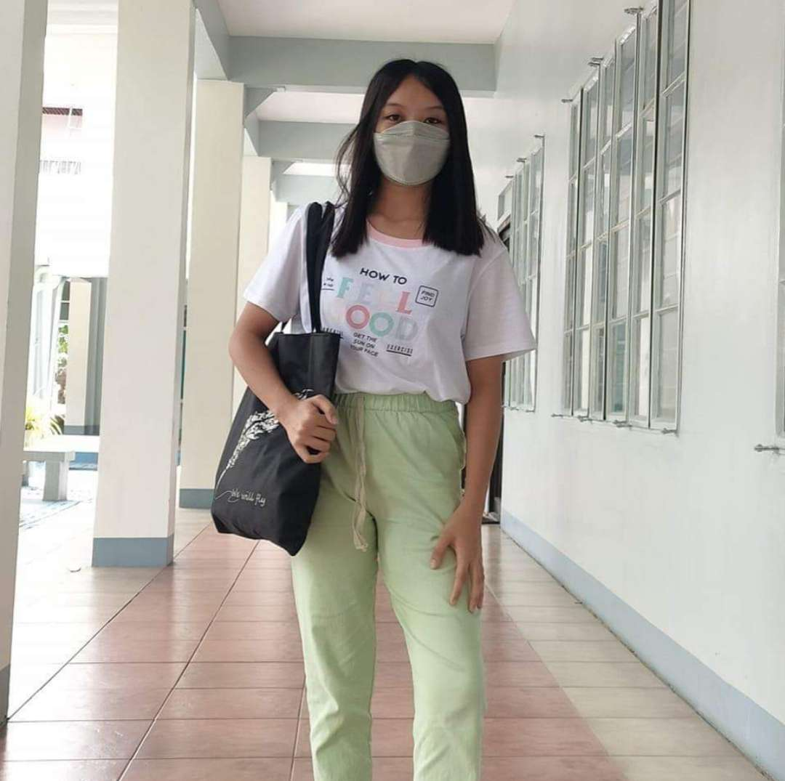

I’m Caryl Letada (She/They). I love playing sports,
especially taekwondo and won a lot of medals during my previous tournaments.
I also excel in dancing, which was really my passion when I was a kid,
and I am also a part of the organization of the tamaraw broadcasting network
at FEU High School.
I'm Angel Erece (she/her) from Q.C., Manila.
I am a FEU Senior Highschool Grade 11 student, part of the STEM strand.
I am a person who's open to try new things and loves adventure.
I find morning/afternoon to be particularly enriching,
as it allows me to breath fresh air, clear my mind of things,
and be one with nature, while listening to music provides a
welcome to me respite from the demands of my school work.

I am Jasmine Lucas (she/her) from Manila, Philippines.
I was a member of the Sci-Math Organization before, which taught me to develop my problem-solving skills
and helped me balance my time between studies and extracurriculars. I’ve competed at district and
provincial levels in the past. And now I am no longer part of this organization.
Currently, I am a member of eureka Science Organization under research committee,
which I believe will help me enhance my knowledge about science.
I am Shaira Sudaria (She/her) from Manila, Philippines.
I am dedicated and an honest person. I was a member of a dance organization before,
which taught me all about discipline. It also allowed me to boost my confidence through
the several dance competitions we have joined. In my free time, I usually read, watch or sleep.